Reflection 2026-05-30 by Richel¶
I think this season went well.
Number of learners seems stable¶
The number of visits seems stable or slightly decreasing:
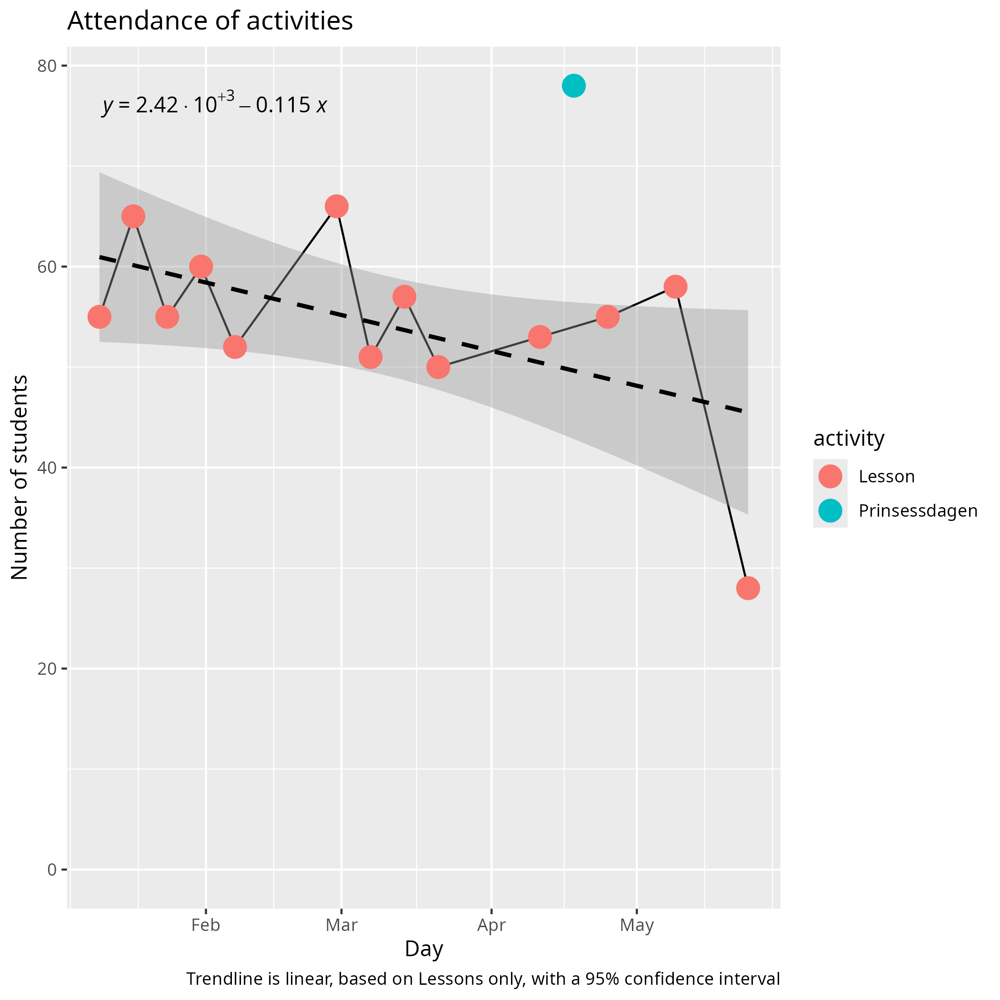
The low amount of visitors at the practice presentations is a recurring thing.
The number of visitors still increases:
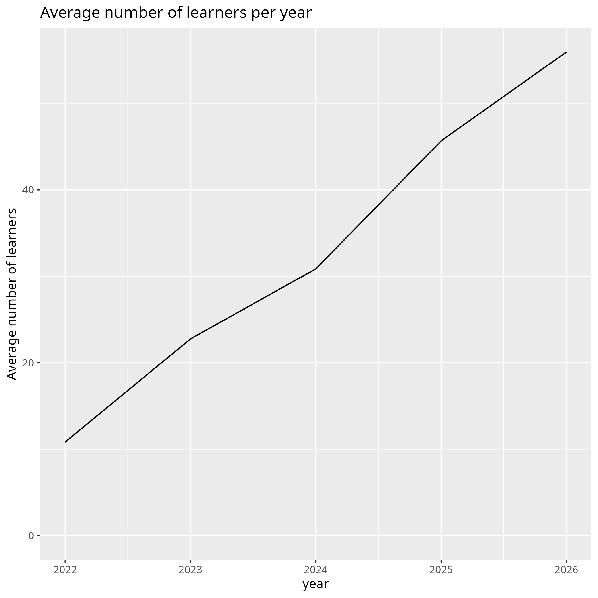
This can be caused by the introduction of the cooking course: most learners that follow this course, do take another course afterwards.
Over the year, the number of learners is stable:
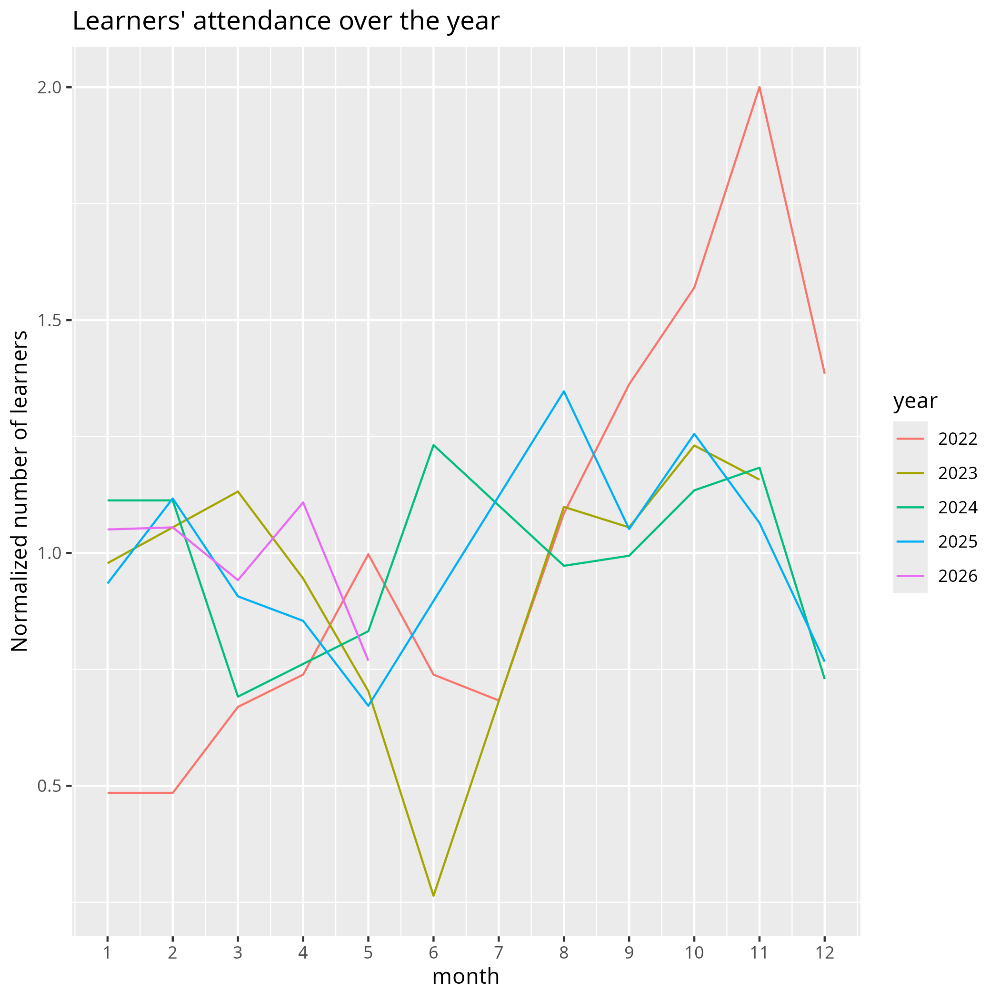
One in five learners stays¶
One in five learners stays longer than 1 season and some learners stay very long:
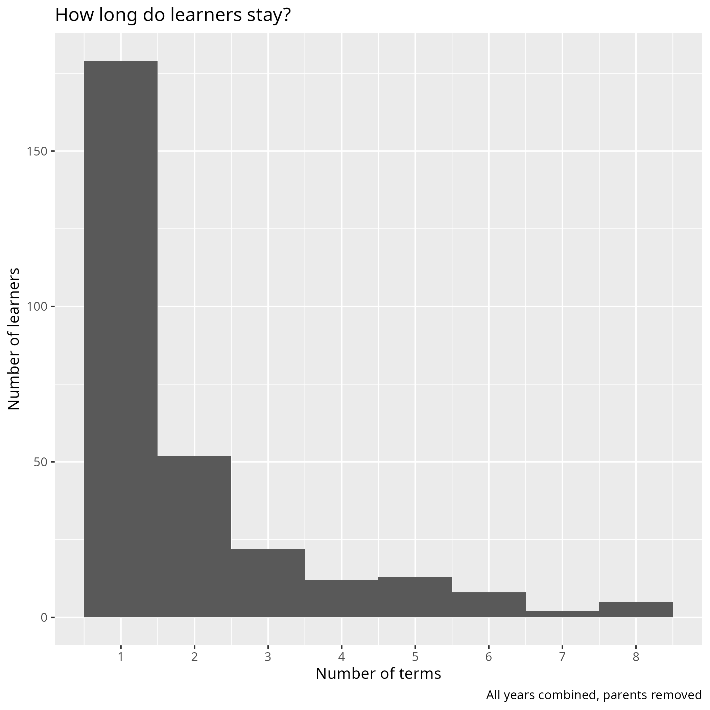
| n_terms | n_learners |
|---|---|
| 1 | 179 |
| 2 | 52 |
| 3 | 22 |
| 4 | 12 |
| 5 | 13 |
| 6 | 8 |
| 7 | 2 |
| 8 | 5 |
I have my worries with an old/veteran/in-crowd group that stays and new learners that drop out. I do see that, for example, the Gyllene Rummet is comfortable with absorbing new learners, even though the room is crowded.
A quarter of all learners help out¶
And I do see that it is the veterans that ruthlessly offer to help (and hence help newbies to stay) at all places (i.e. Gyllene Rummet, Platina Rummet, Electronik verstad) with 2 out of the top-14 helpers being newbies themselves:
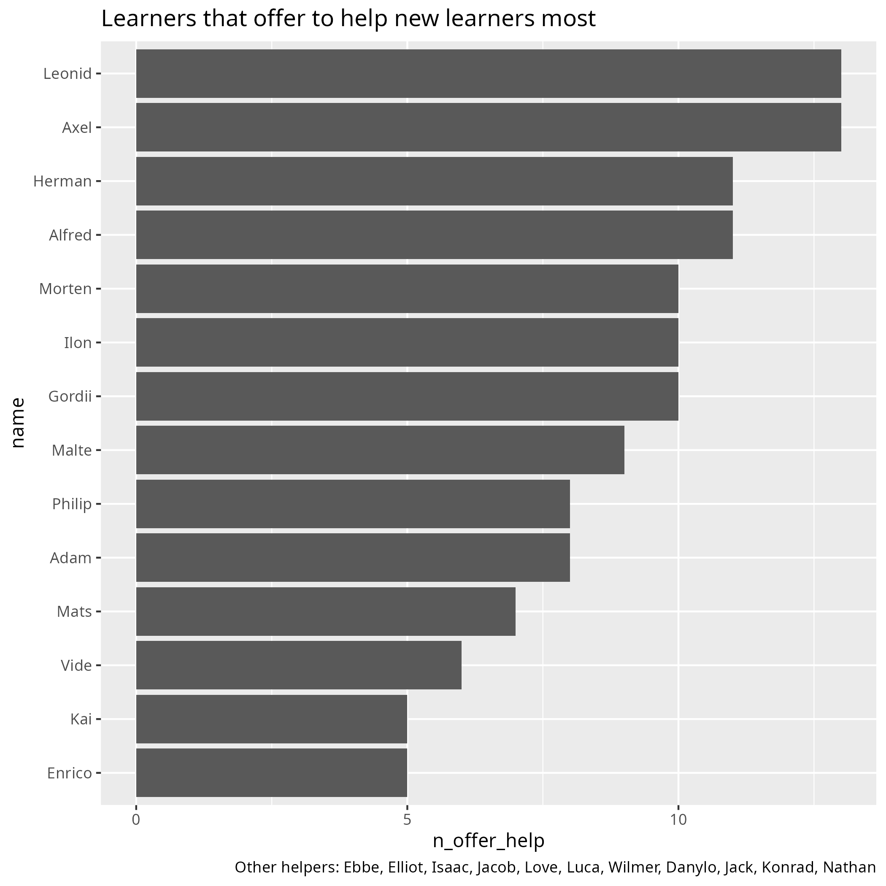
When people help is unpredictable, but it is around 25%:
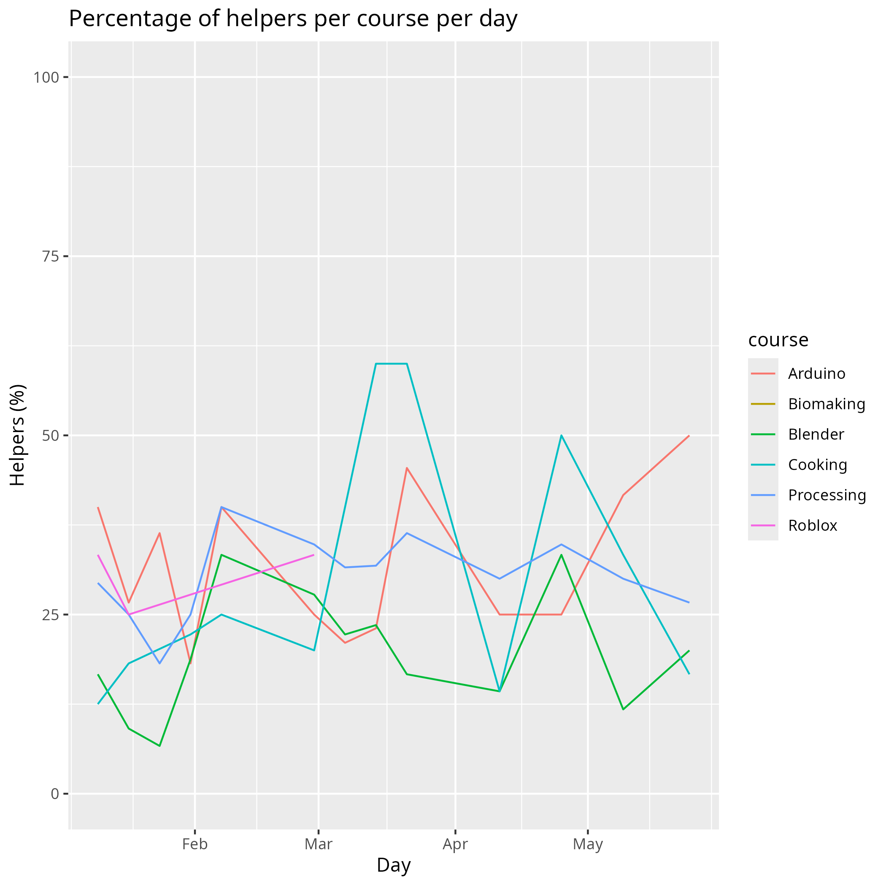
Courses¶
Number of learners per course seems stable¶
Which courses are visited seems stable:
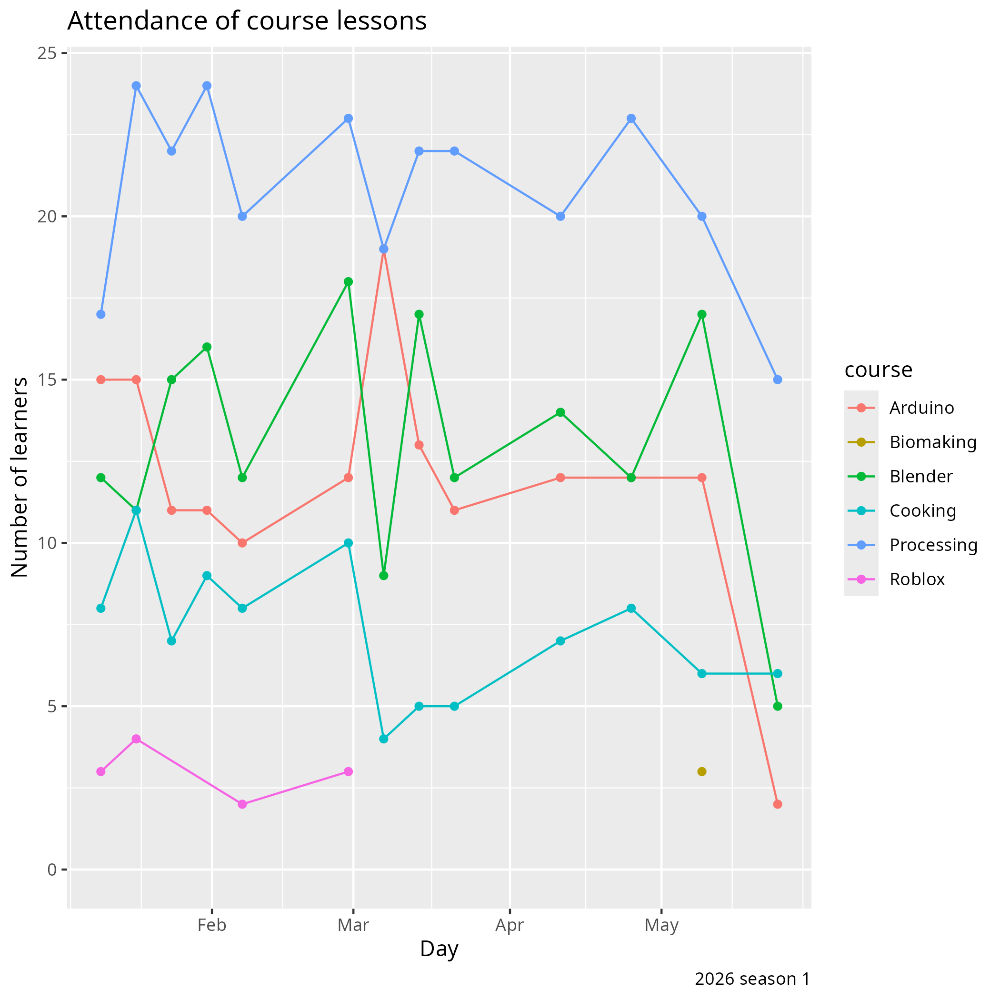
Here I use that same data to make predictions:
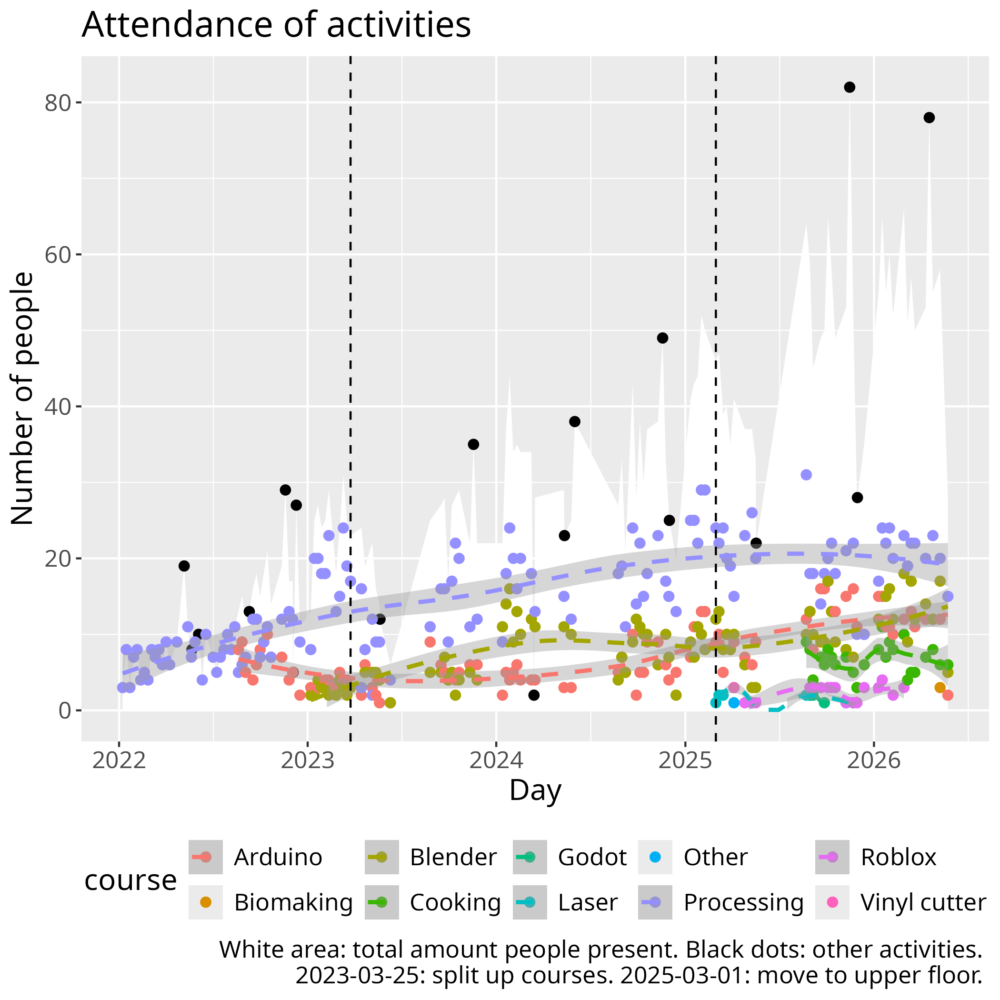
The prediction model assuming a logistic growth for courses now states that Blender and Processing are now at carrying capactity, where Arduino and the cooking course are still growing:
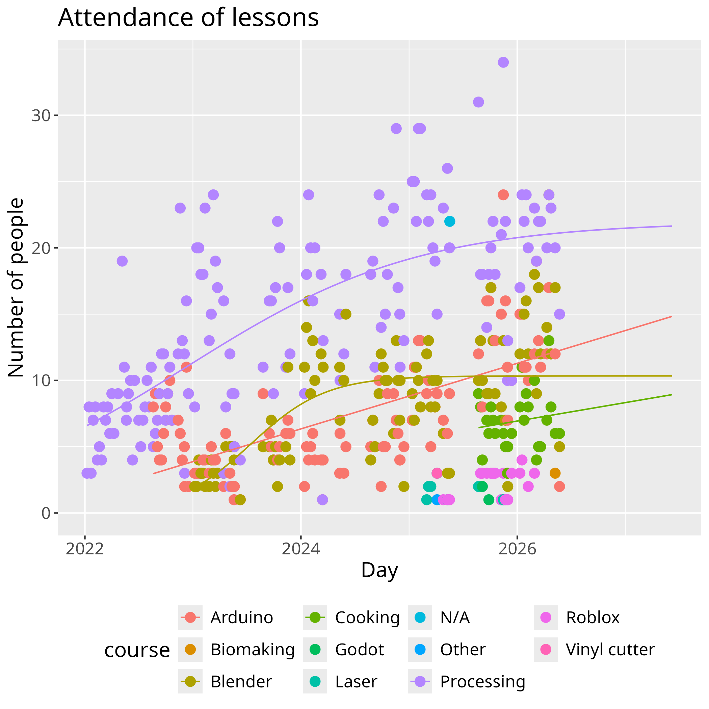
Arduino does fine¶
The Arduino course does fine.
One innovation is an Arduino-specific electronic component organizers, where the drawers are organized based on the lessons, with the top-left drawer having the component for lesson 1.
The Arduino course still has a weakness:
- Update the connect-buttons lesson (?8) on the first lesson card
The Arduino course has had its first certificates since a long time, with two learners having finished the first lesson card. I have started working on the next lesson card, but the lessons there were rushed and I am not happy with them yet. These new lessons also required an investment, as new components needed to be bought.
One thing I did wrong with designing the learning line of lesson card 2, is that I followed the same structure as in lesson card 1, with 1 lesson on connecting a component, 1 lesson on measuring a component and 1 lesson on using an Arduino to use a component: this does not work anymore for the more complex components. Instead, I want lesson card 2 to focus more on combining multiple components.
- Work on lesson card two
Blender does fine¶
The Blender course seems to do fine.
The amount of learners seems to be stable. Me and the Blender course leader are always on the lookout to make Blender more important, such as by asking learners to create 3D printed things for the Arduino or cooking course. One example is a 3D printed thing/?shield to get powdery sugar into a text on a cake.
The Blender books seems to be fine. We have our first learner
that is on track to do all the lessons and get the first Blender
certificate ever. Let's see if he finishes that lesson card 
The Blender course learners have found the 3D printers. In the background, a UMS member fixes these outside of course hours and he notices that 3D printers break too often. To help him out and to make sure the 3D printers are in good shape, we've added two rules about 3D printing:
- For the first print, you need to see the print from start to end
- For the second and later prints, you need to be within hearing distance
The cooking course is thriving¶
The cooking course seems to thrive.
The course has a stable group of both teachers and participants.
The teachers are structuring the course and have developed a lesson card for the learners to follow. The first learner finishing the lesson card is near! The course does not use a booklet yet, but the teachers are informally talking about doing so.
The course has a special feeling to it, with kids coming early to cook and have breakfast together. It adds a bit of a family feeling into the LK mix.
Laser cutter course has become dormant¶
The laser cutter course seems to be dormant.
Only few times the laser cutter volunteer was present. Due to this, few learners learned to use the laser cutter. This is fine, as we cannot force people to be at UMS.
I will consider the laser cutter course dormant for now.
Processing seems fine¶
The programming course seems to do fine.
The amount of learners seems to be stable.
The course has two lesson cards, which have been completed by multiple learners. The Gyllene and Platinum Rummet are where these elite programmers end up. In both rooms, these learners seem to develop into doing group projects.
New Biomaking course worked fine¶
This season had two occurrances of the Biomaking course, the first English-only course, taking place from 13:00-15:00, with 4 and 3 learners being present, with 4 (or 6?) weeks between the two sessions. The language seemed not to be a deterrant. The time the course took place, however, may have reduced attendance: at the same time, in the programming course, there are stable groups of friends, that will be hard to break up.
Reception desk¶
The reception desk is a joy.
The main volunteer running it is given more responsibility (read: admin!) and seems to be happy with that:
- maintain a list of learner, parents and phone numbers: ongoing, I estimate 2 out of 3 learners is on this list
- maintain a list of allergies: ongoing, started later, I estimate 1 out of 5 learners is on this list. This needs more work
Additionally, the reception desk is happy to take up another
task: the presence lists. I will happily instruct him
how to do so
The reception desk is also a great place for questions. I happily and commonly redirect people to the reception desk under course hours.
Gyllene Rummet¶
The Gyllene Rummet is lead by two learners, holds many veteran learners and can be recognized from its liveliness (i.e. noise). I think the leaders of the room do an excellent job at running this room: they even have stricter rules than the other rooms.
I want to keep the Gyllene Rummet as it is, keep its leadership and and follow the rules they decide upon.
Platina Rummet¶
The Platina Rummet is not lead by one or more people, holds many veteran and more individualistic learners and can be recognized from its high focus and silence. It is this room where, during the Extratimme, we have a shared project. The shared project, however, is not the main project for any of the learners, but at 14:15 they seem to agree to work on it. Due to this, progress is slow. However, I am happy with how it is going: it is the first time that these people see code written by others.
I want to keep the Platina Rummet as it is and I hope that an extra term will help the people in the Platina Rummet to become more of a group.
Percentage of adult visitors is decreasing¶
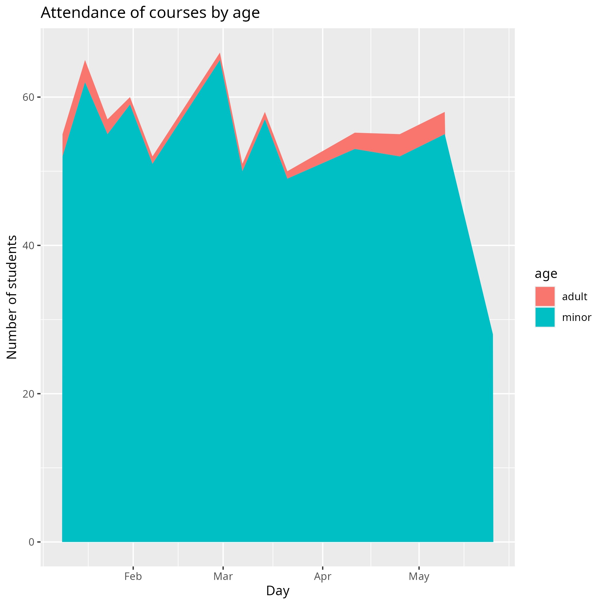
I enjoy having adults. The minors -from earlier evaluations- like having adults. Even though I put extra care into keeping adults, I failed to increase the percentage of adults in the LK. One reason for this is that I used the Extratimme -the hour for adults- to lead an advanced programming team: I could only do one thing.
One of the volunteers intends to start teaching something himself,
at hours outside of the LK. Maybe he can be the connecting factor here.
If will do I all can to make that happen
Team¶
The team consists out of 7 people, of which 1 new. I am quite proud how this -quite experienced- team rolls.
The shortage of volunteers is stable¶
Most volunteers have been active for at least a year now and it a joy to work with all of them: they know what to do and could take over would something urgent pop up. I did fail to attract more volunteers, even though I have been actively visiting UMS events that I can use to recruit new volunteers.
There was a very enthusiastic volunteer. However, after three times showing up (and teaching the whole day!) he suddenly disappeared. His first name is common and I failed to remember his last name, so I could not contact him. I hope he is OK.
These are some number showing how much percentage of the times there is a volunteer, where 100% denotes that there is 1 volunteer on average:
| Course | Volunteer density |
|---|---|
| Arduino | 110% |
| Biomaking | 100% |
| Blender | 100% |
| Cooking | 175% |
| Laser cutter | 10% |
| Processing | 50% |
Thank-you meeting for volunteers¶
I organized the first thank-you meeting for the direct volunteers, with 3 out of 7 volunteers showing up. I can be blamed for this low amount, as I organized this last-minute.
- Schedule thank-you meeting earlier
I do intend to add a thank-you meeting for all volunteers at UMS: there are so many that indirectly help LK.
Percentage of females is increasing¶
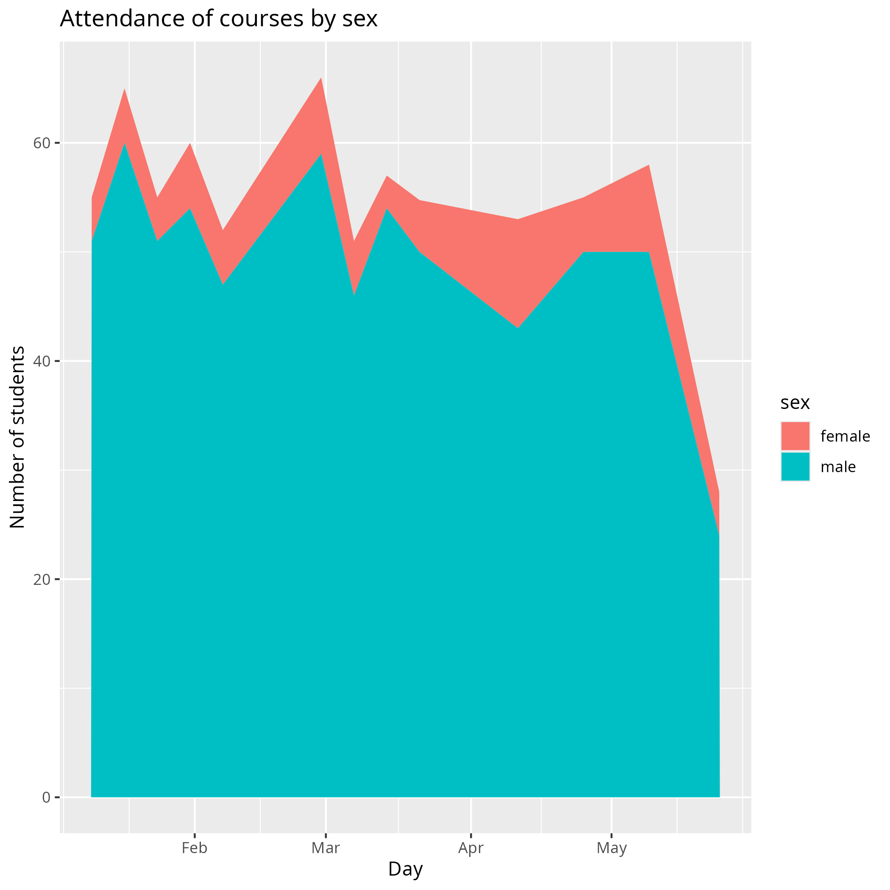
In the 2026 data so far, I see that 12% of all visits is by a female. and 29% of all unique visitors is a female. Compared to 2025, where 11% of all visits is by a female. and 24% of all unique visitors is a female, this is a 10-20% increase. I feel the cooking course is the main cause of this, with 2 girls (out of 8 learners) being part of the core group.
Prinsessdagen¶
The Prinsessdagen was visited well and worked out great. As we use 'prinsess' instead of 'mor', some learners brought a classmate. I think that that is superior, so I want to stick to the females-in-general theme.
I did not like the title however and I will use International Women's Day next time, around March 8th.
I already started this, by using International Men's Day instead of Efterfarsdag.
Finances¶
As I have no access to the finances, I have no idea how many parents pay the half-yearly course fee. I do know that Uppsala Kommun donates a sum of money to UMS that easily covers all course expenses.
This season, there were more expenses, due to:
- some Arduino learners going through new lessons of which the components had not yet been bought
- the cooking course
What was new is that I now follow the general UMS spreadsheets to specify costs, where there is a seperation between investments and consumable.
In total, in this season, I spent 24,152.54 kr. Of these, 17,890.82 kr were not yet split between investments and consumables. The later spending consisted of 4,194 kr investments and 2,067.72 kr in consumable. From that last spending, two thirds were investments. Assuming from this that one third of the costs are for consumables, and that this ratio is the same for the unsplit cost, it means that all courses in total cost 8k kr in consumables.
| n_terms | n_learners |
|---|---|
| 1 | 179 |
| 2 or more | 52+22+12+13+8+2+5=114 |
With 75 unique minor visitors, and assuming (114 / 179 =) 64% to make it into the second or later year, this means we've had (75 64%) = 48 learners that I can imagine having paid. With 300 kr per minor 48 minor = 14k kr. This number (even though it is a back-of-the-envelope calculation) is more than the 8k kr needed. It means that the course, from its own income, made a loss (as total costs was 24k kr, income 14k kr, hence a loss of 10k). However, the course does pay for its own consumables (as income is 14k kr and consumables 8k kr).
Due to this, I think the course cost of 300 kr per minor is still fair.
Evaluation results¶
Here I use the evaluations results. I mix them around and fix some spelling errors if it annoys me enough.
What goes well:
- Göra saker bra
- Många av sakerna
- I feel like the course already is amazing and I can't really think of anything that needs improvising
- Good
These are some neutral and positive things.
- Matlagning
Great that the cooking course is appreciated!
- Ha kvar gyllene rummet
- Gyllene rymmet ska va kvar
- Fortsätta na gyllene rummet
- Ha kvar gyllene rummet
- Har kvar gyllene rummet
I am happy the Gyllene Rummet is appreviated!
- Att grupper på den avansera tiden ska göra ett spel
I am happy to hear that this is appreciated! I am unsure how much the Platinum Room's shared game is appreciated.
- Biomaking
Great the the Biomaking course is appreciated!
- 3D printa
I will forward this compliment to the 3D printer repair man :-)
-
Forward compliment to the 3D printer repair man
-
Hjälpa elever är bra!
Great!
- Fortsätta gå till sofforna
- Fortsätta gå till sofforna
Sure! I wonder what is so special about my messages ...?
- Processing and cheap 1kr sweets
Great! I will forward the kiosk-relevant compliment to the kiosk.
-
Forward kiosk-relevant compliment to the kiosk
-
Bjoritowo + PI-day
Interesting: we did not have either of these activities ...?
- Jag ska göra betere min rök botare makin
- Vet inte
:-)
What could be improved?
- En tävling om vem som ska få vara i gyllene rummet
I already forwarded this to the leaders of the Gyllene Rummet and I told them they are free to listen yes/no.
- Lite mer personal
- More than 1 day
I agree that that would be great!
- Bättre bord som inte vicks ihop av sig själva (särkilt gyllene rummet)
- Bättre bord i gyllene rummet
- Bättre bord som inte viker ihop sig
- Bättre bord i gyllene rummet
I am happy that the Gyllene Rum has such a concensus. This improvement item, by chance (?) has already been fixed, as the Book Binding Workshop (i.e. the workshop in that same room) needed better tables.
- Ta bort godsakerna från kiosken
- Ta bort godsakerna från kiosken!
I will forward this to the kiosk
-
forward this suggestion to the kiosk
-
Göra en Processing games course
- Böcker för programmeri att läsa och lära
The latter is a common suggestion and we do have books for programming (among others, Processing and C++). From earlier evaluations, as well as the first suggestion, it is more Processing booklets meant by this. Making more booklets is a lot of work.
-
Consider making lesson card 3 for Processing, after finishing the Arduino lesson card 2
-
C++ kurs på processing tid som Blender och Arduino
If I would have a volunteer, I'd be happy to do so.
-
Ask for volunteer to teach C++
-
Mer datorer de tar slut
I agree. I am already always hunting for more laptops...
- Kakor mysterybox
No idea what is meant by this.
-
Forward this to the cooking course
-
Minecraft modding kurs
If I would have a volunteer, I'd be happy to do so.
-
Ask for volunteer to teach Minecraft modding
-
Vet inte
- Allt er bra
- Jag vet inte
- Nothing
Future plans¶
Keep going.
Conclusion¶
These are nearly the same as previously:
- Course attendance seems stable (i.e. not growing anymore)
- Learners stay long: we have 5 that have stayed all 8 seasons (!)
- The team is experienced (hence easy to works with), yet too small
- The evaluation results are very positive, although there is a selection bias that happy participants tend to stay :-)
- Financially we seem to do fine